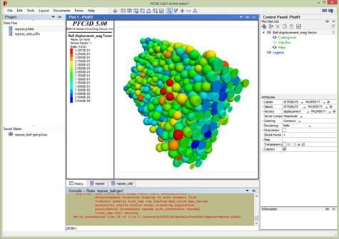

程序窗口


图 1：处于“宽”布局的PFC。标题为“Plot 1”的视图窗格处于活动状态——其标题栏为较深的蓝色，表明了这一点。
程序界面的核心原则是：
任何时候都有一个窗格处于活动状态。
该窗格内的工作将通过工具栏和控制面板提供的设施来完成，二者的内容都随当前活动窗格而变化。
这里的理念是，模型开发环境必须解决如何在一套程序中集成多种程序的问题：
- 控制台应用程序（控制台窗格）
- 文本编辑器（编辑窗格）
- 绘图/可视化程序（视图窗格）
- 项目管理套件（项目和状态记录窗格）
- Python 控制台应用程序（iPython窗格）
- 二维交互式可视化挤出工具（FLAC3D中的挤出工具）
- 三维交互式基于块的网格划分工具（FLAC3D中的构建块工具）
因此，窗格包含单一的逻辑功能，它为实现其目的而使用工具栏和控制面板（在一定程度上也包括状态栏和菜单）。将程序置于“单个”布局（在主菜单上选择），这一基本原则就能得到最好的体现。
程序中的所有工作都可归结为窗格+工具栏+控制面板。然而，实际情况是大多数用户都希望在同一时间于程序窗口中显示多个窗格。这引出了界面的第二条主要原则：
程序布局大部分可由用户安排。
例外情况如下：主菜单、主工具栏、状态栏和控制面板不能移动——不过控制面板可以收起。所有其他组件（即所有窗格）都可由用户按偏好安排。
前面的各节介绍了这些组件在建模过程中的用法。本节则致力于从更一般的意义上说明它们的用法，即确定它们在程序中应发挥的作用以及它们之间应如何交互。
CS：文件 flac3d 程序布局挂在“scrap”上，该部分现已被注释掉；它可能包含也可能不包含需要并入其他位置的信息
| 这些内容对您有帮助吗？… 版权与免责声明 | FLAC3D © 2019, Itasca | 原文更新于 2020 年 10 月 8 日 |